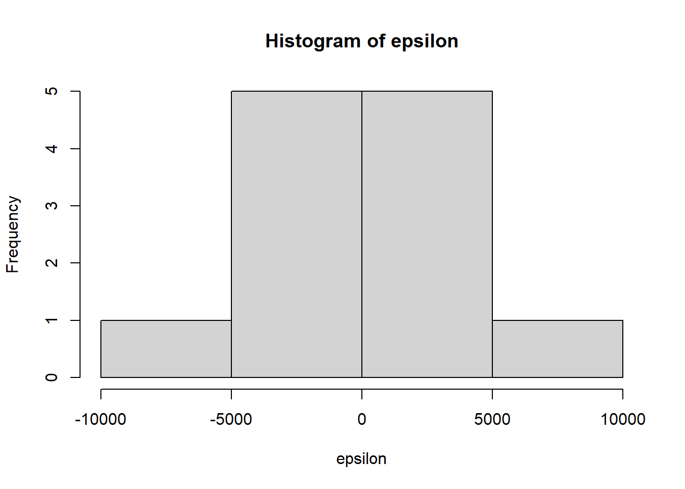

library(openxlsx)
library(corrplot)
library(lmtest)Capitulo_3_Regresion_Multiple
1 1. Material descargable
Descargar PDF de contenidos teóricos
El documento incluye:
- Matriz de correlación y multicolinealidad.
- Supuestos del modelo clásico de regresión múltiple.
- Derivación de estimadores OLS \((X'X)^{-1}X'Y\).
- Varianza del error y matriz de covarianza del estimador.
- \(R^2\), \(R^2\) ajustado y prueba F global.
- Inferencia individual sobre coeficientes (\(t\)-tests).
- Intervalos de confianza.
- Pruebas de autocorrelación y heterocedasticidad.
2 Configuración inicial
Definimos tu ruta de datos:
ruta_datos <- "C:/Users/manue/Desktop/lab-econometria/labs_epg/data_epg"
list.files(ruta_datos) [1] "annos_mantenimiento.xlsx" "auto_peso_consumo.xlsx"
[3] "costos.xlsx" "data_PCA_Decathlon.csv"
[5] "data_PCA_ExpertWine.csv" "Ejemplo1.xlsx"
[7] "Ejemplo2.xlsx" "millaje.txt"
[9] "orange.csv" "tabla_ejemplo_R.xlsx" 3 Lectura de datos
archivo <- file.path(ruta_datos, "costos.xlsx")
datos <- read.xlsx(archivo, sheet="Hoja1", colNames=TRUE)
head(datos) Costos_generales Horas_mano_de_obra Horas_maquina Numero_preparaciones
1 155000 985 1060 200
2 160000 1068 1080 225
3 170000 1095 1100 250
4 165000 1105 1200 202
5 185000 1200 1600 210
6 135000 1160 1100 150Los datos contienen:
- Costos_generales (variable dependiente).
- Horas_maquina y Numero_preparaciones (variables explicativas).
4 Matriz de correlación
La matriz de correlación nos permite:
- Detectar relaciones lineales entre pares de variables.
- Identificar multicolinealidad entre regresores.
r <- cor(datos)
r Costos_generales Horas_mano_de_obra Horas_maquina
Costos_generales 1.0000000 0.53462157 0.8775005
Horas_mano_de_obra 0.5346216 1.00000000 0.7680722
Horas_maquina 0.8775005 0.76807222 1.0000000
Numero_preparaciones 0.6274762 -0.04731148 0.2507478
Numero_preparaciones
Costos_generales 0.62747618
Horas_mano_de_obra -0.04731148
Horas_maquina 0.25074784
Numero_preparaciones 1.000000004.0.1 Gráficos de exploración
pairs(datos)
corrplot(r, method="circle", type="lower", diag=FALSE,
tl.col="black", tl.cex=1, tl.srt=45)
Nota
🔍 Interpretación pedagógica:
- Valores altos en la correlación entre regresores → multicolinealidad.
- Esto puede inflar varianzas de los estimadores y hacer inestables los coeficientes.
- La matriz y el corrplot permiten detectar problemas antes de ajustar el modelo.
5 Modelo de regresión múltiple
Ajustamos el modelo:
\[ \text{Costos} = \beta_0 + \beta_1(\text{Horas\_maquina}) + \beta_2(\text{Numero\_preparaciones}) + \varepsilon \]
modelo <- lm(Costos_generales ~ Horas_maquina + Numero_preparaciones, data=datos)
summary(modelo)
Call:
lm(formula = Costos_generales ~ Horas_maquina + Numero_preparaciones,
data = datos)
Residuals:
Min 1Q Median 3Q Max
-7157 -2827 768 1449 9407
Coefficients:
Estimate Std. Error t value Pr(>|t|)
(Intercept) 19796.44 12787.83 1.548 0.156013
Horas_maquina 65.44 6.74 9.709 4.57e-06 ***
Numero_preparaciones 322.21 58.66 5.493 0.000384 ***
---
Signif. codes: 0 '***' 0.001 '**' 0.01 '*' 0.05 '.' 0.1 ' ' 1
Residual standard error: 4951 on 9 degrees of freedom
Multiple R-squared: 0.9472, Adjusted R-squared: 0.9354
F-statistic: 80.66 on 2 and 9 DF, p-value: 1.792e-06
Nota
- Prueba individual (t test): evalúa si cada (_j) es distinto de 0.
- Prueba global (F test): evalúa si el modelo en conjunto explica la variable dependiente.
- **Signo de (_j):** indica dirección del efecto.
- Magnitud: indica cuánto cambia Y ante un cambio unitario en el regresor.
- p-values pequeños: evidencia estadística de relación significativa.
6 Residuos del modelo
epsilon <- modelo$residuals
hist(epsilon)
plot(density(epsilon))
mean(epsilon)[1] 1.705303e-136.0.1 Normalidad de los residuos
shapiro.test(epsilon)
Shapiro-Wilk normality test
data: epsilon
W = 0.95577, p-value = 0.72226.0.2 Autocorrelación (Durbin–Watson)
dwtest(modelo, alternative="two.sided", iterations=1000)
Durbin-Watson test
data: modelo
DW = 2.0815, p-value = 0.7416
alternative hypothesis: true autocorrelation is not 0Interpretación: - DW ≈ 2 → no autocorrelación
- DW < 2 → autocorrelación positiva
- DW > 2 → autocorrelación negativa
6.0.3 Heterocedasticidad (Breusch–Pagan)
bptest(modelo)
studentized Breusch-Pagan test
data: modelo
BP = 1.0153, df = 2, p-value = 0.60197 Estadístico F calculado a mano
R2 <- 0.9472
F <- (R2/2)/((1-R2)/(12-3))
F[1] 80.72727qf(0.05, 2, 9, lower.tail=FALSE)[1] 4.256495Interpretación: si F calculado > F crítico → el modelo aporta información significativa.
8 Desviación estándar del error
s <- sqrt(sum(epsilon^2)/(12-2-1))
s[1] 4951.1069 Intervalos de confianza de los coeficientes
confint(modelo) 2.5 % 97.5 %
(Intercept) -9131.64046 48724.5095
Horas_maquina 50.18894 80.6827
Numero_preparaciones 189.50994 454.90469.0.1 Cálculo manual del intervalo
se <- sqrt(diag(vcov(modelo)))
t <- -1*qt(0.025, 12-2-1, lower.tail=FALSE)
BHM <- 65.44
sbhm <- 6.74
limitsupBHM <- BHM + t*sbhm
limitinfBHM <- BHM - t*sbhm
limitsupBHM; limitinfBHM[1] 50.19306[1] 80.6869410 Intervalo para la varianza del error
gamma1 <- qchisq(0.025, 12-2-1)
gamma2 <- qchisq(0.975, 12-2-1)
s2_LI <- (12-2-1) * s^2 / gamma2
s2_LS <- (12-2-1) * s^2 / gamma1
s2_LI; s2_LS[1] 11597739[1] 8169973211 Predicción puntual
nuevo <- data.frame(Horas_maquina=2000, Numero_preparaciones=220)
valor_predicho <- predict(modelo, newdata=nuevo)
valor_predicho 1
221553.7 12 Intervalo de confianza con predict
valor_predicho2 <- predict(modelo, newdata=nuevo, interval="confidence")
valor_predicho2 fit lwr upr
1 221553.7 210265.6 232841.813 Predicción manual paso a paso
Construimos la matriz (X):
X <- cbind(1, datos$Horas_maquina, datos$Numero_preparaciones)
M <- solve(t(X) %*% X)
beta <- M %*% t(X) %*% datos$Costos_generales
x0 <- c(1, 2000, 220)
h0 <- t(x0) %*% M %*% x0
y0 <- t(beta) %*% x0
y0 [,1]
[1,] 221553.713.0.1 Intervalo manual
y_limsup <- y0 + s*sqrt(1+h0)*qt(0.975, 12-2-1, lower.tail=FALSE)
y_liminf <- y0 - s*sqrt(1+h0)*qt(0.975, 12-2-1, lower.tail=FALSE)
y_liminf; y_limsup [,1]
[1,] 237455.4 [,1]
[1,] 205651.914 Gráfico Y real vs Y predicho
plot(modelo$fitted.values, datos$Costos_generales,
main="Revisión Valor Real vs Valor Predicho")
lines(c(140000,200000), c(140000,200000))
15 Modelo sin constante
modelo2 <- lm(Costos_generales ~ Horas_maquina + Numero_preparaciones - 1, data=datos)
summary(modelo2)
Call:
lm(formula = Costos_generales ~ Horas_maquina + Numero_preparaciones -
1, data = datos)
Residuals:
Min 1Q Median 3Q Max
-9042.2 -3486.9 739.7 3467.0 9300.3
Coefficients:
Estimate Std. Error t value Pr(>|t|)
Horas_maquina 69.994 6.472 10.814 7.72e-07 ***
Numero_preparaciones 390.723 41.098 9.507 2.52e-06 ***
---
Signif. codes: 0 '***' 0.001 '**' 0.01 '*' 0.05 '.' 0.1 ' ' 1
Residual standard error: 5286 on 10 degrees of freedom
Multiple R-squared: 0.9992, Adjusted R-squared: 0.999
F-statistic: 6095 on 2 and 10 DF, p-value: 3.699e-1615.0.1 Análisis de residuos modelo sin constante
epsilon <- modelo2$residuals
hist(epsilon)
plot(density(epsilon))
shapiro.test(epsilon)
Shapiro-Wilk normality test
data: epsilon
W = 0.97973, p-value = 0.9825dwtest(modelo2,alternative="two.sided",iterations=1000)
Durbin-Watson test
data: modelo2
DW = 2.1284, p-value = 0.9776
alternative hypothesis: true autocorrelation is not 0bptest(modelo2)
studentized Breusch-Pagan test
data: modelo2
BP = 0.33027, df = 1, p-value = 0.5655